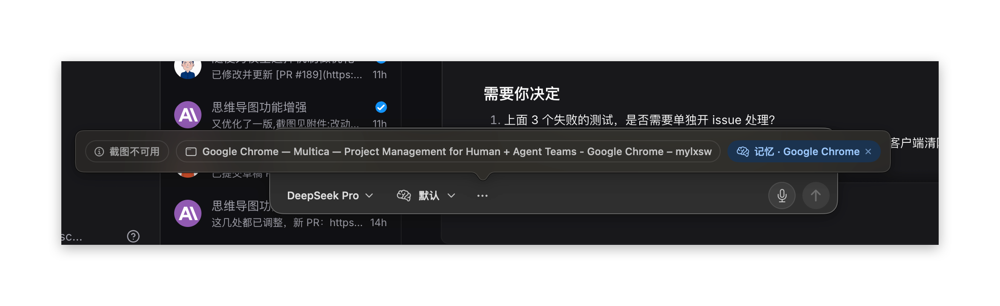

截图不可用DeepSeek Pro 不支持图片识别
截图 · 不可用
问题：上下文 chip（截图、来源应用、选中文本、记忆）直接显示完整文字，来源应用还带着整条窗口标题。空间不够时整组收进「…」，点开的弹层比输入框还宽。
方案：图标优先，每个 chip 有最大宽度，文字悬停时再看。平时只显示图标，用颜色表示状态；鼠标悬停 150ms 后，在上方弹出说明卡，显示完整名称、详情和可做的操作。chip 本身宽度不变，底栏不会跳动。聊天页输入框和快捷浮窗共用同一套规则。

accessibilityLabel 是完整名称，详情放在 accessibilityHint，读屏不依赖悬停。ViewThatFits 从「全部显示」开始，每次多收一项，直到放得下。| 图标 chip | 28×28，圆角 8，1pt AskTheme.border，图标 14pt。已附带：accentSoft 底 + accentText 图标 |
| 来源 chip | 28×28，应用图标 16。按捕获时记录的 bundle id 取图标，取不到时用 macwindow |
| 模型按钮 | 宽度随名称，超过 16 个字符时中间省略 |
| 角标 | 行数：蓝底白字 15pt；来源应用：12pt 圆形应用图标；移除 ×：14pt，仅悬停时出现 |
| 说明卡 | 悬停 150ms 出现（已确认），宽 240，详情最多 3 行；移开即消失 |
| 间距 | chip 之间 6；模型、推理与 chip 之间的分隔线 1×16 |
| 数据 | AskDraft.source 拆成应用名和窗口标题（现在是用「 — 」拼起来的）；记忆角标取 AskMemory.app |
| 范围 | 聊天页输入框和快捷浮窗都用 AskComposer，一处改两处生效 |